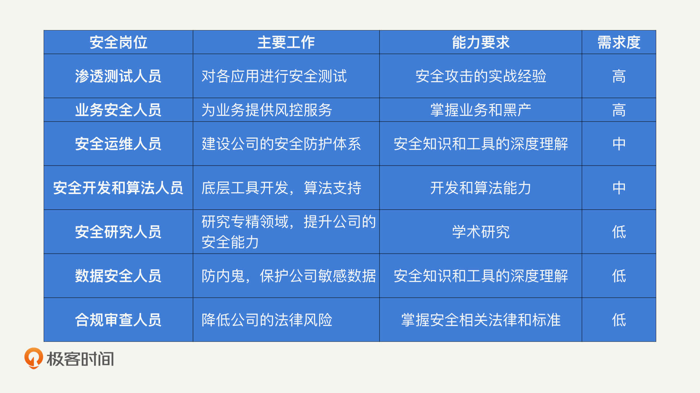

- 00 开篇词 别说你没被安全困扰过.md.html
- 01 安全的本质：数据被窃取后，你能意识到问题来源吗？.md.html
- 02 安全原则：我们应该如何上手解决安全问题？.md.html
- 03 密码学基础：如何让你的密码变得“不可见”？.md.html
- 04 身份认证：除了账号密码，我们还能怎么做身份认证？.md.html
- 05 访问控制：如何选取一个合适的数据保护方案？.md.html
- 06 XSS：当你“被发送”了一条微博时，到底发生了什么？.md.html
- 07 SQL注入：明明设置了强密码，为什么还会被别人登录？.md.html
- 08 CSRF_SSRF：为什么避免了XSS，还是“被发送”了一条微博？.md.html
- 09 反序列化漏洞：使用了编译型语言，为什么还是会被注入？.md.html
- 10 信息泄露：为什么黑客会知道你的代码逻辑？.md.html
- 11 插件漏洞：我的代码看起来很安全，为什么还会出现漏洞？.md.html
- 13 Linux系统安全：多人共用服务器，如何防止别人干“坏事”？.md.html
- 14 网络安全：和别人共用Wi-Fi时，你的信息会被窃取吗？.md.html
- 15 Docker安全：在虚拟的环境中，就不用考虑安全了吗？.md.html
- 16 数据库安全：数据库中的数据是如何被黑客拖取的？.md.html
- 17 分布式安全：上百个分布式节点，不会出现“内奸”吗？.md.html
- 18 安全标准和框架：怎样依“葫芦”画出好“瓢”？.md.html
- 19 防火墙：如何和黑客“划清界限”？.md.html
- 20 WAF：如何为漏洞百出的Web应用保驾护航？.md.html
- 21 IDS：当黑客绕过了防火墙，你该如何发现？.md.html
- 22 RASP：写规则写得烦了？尝试一下更底层的IDS.md.html
- 23 SIEM：一个人管理好几个安全工具，如何高效运营？.md.html
- 24 SDL：怎样才能写出更“安全”的代码？.md.html
- 25 业务安全体系：对比基础安全，业务安全有哪些不同？.md.html
- 26 产品安全方案：如何降低业务对黑灰产的诱惑？.md.html
- 27 风控系统：如何从海量业务数据中，挖掘黑灰产？.md.html
- 28 机器学习：如何教会机器识别黑灰产？.md.html
- 29 设备指纹：面对各种虚拟设备，如何进行对抗？.md.html
- 30 安全运营：“黑灰产”打了又来，如何正确处置？.md.html
- 加餐1 数据安全：如何防止内部员工泄露商业机密？.md.html
- 加餐2 前端安全：如何打造一个可信的前端环境？.md.html
- 加餐3 职业发展：应聘安全工程师，我需要注意什么？.md.html
- 加餐4 个人成长：学习安全，哪些资源我必须要知道？.md.html
- 加餐5 安全新技术：IoT、IPv6、区块链中的安全新问题.md.html
- 模块串讲（一）Web安全：如何评估用户数据和资产数据面临的威胁？.md.html
- 模块串讲（三）安全防御工具：如何选择和规划公司的安全防御体系？.md.html
- 模块串讲（二）Linux系统和应用安全：如何大范围提高平台安全性？.md.html
- 结束语 在与黑客的战役中，我们都是盟友！.md.html
- 捐赠
加餐3 职业发展：应聘安全工程师，我需要注意什么？
你好，何为舟。欢迎来到安全专栏的第三篇加餐时间。
经常有人会问我：“何老师，我已经学了不少安全相关的攻防知识了，那我该如何成为一名专业的安全工程师呢？”
今天我就通过一篇加餐，以我在面试时看到的一些简历为基础，来和你聊一聊公司在招聘安全人员的时候在意什么？你又需要注意些什么？
安全岗位有哪些？
安全是一个跨度很广的领域。所以，对于一个负责公司安全的中高层领导来说，他们当然需要一个对这些领域有全面认知和理解的人。但是，我们作为一名普通员工，经常只专注于某一个领域或者方向，去深入研究。
虽然在这个课程中，我们一直使用“安全工程师”这个词来指代所有的安全人员，但实际上，不同的公司会根据安全方向的不同，拆分出不同的安全岗位。所以，对于求职者来说，认清自己擅长哪个方向、适合哪个岗位是很重要的。下面，我们先来了解一下，公司中都存在哪些安全岗位。
首先，我们来看两个最直接也是最普遍的安全岗位：渗透测试和安全运维。
在讲Web安全的时候，我们介绍了一些常见的攻击方式。那么，如何确保公司开发出来的应用不存在Web安全漏洞呢？这就需要渗透测试人员来进行安全测试了。对于渗透测试人员来说，自身的安全攻击水平是其最核心的能力。
在“Linux系统和应用安全”“安全防御工具”这两个模块中，我们介绍了通过应用自带的安全配置和额外的安全工具，来为公司建立一套安全防御体系的技巧和方法。这些工作通常是交给安全运维人员负责。对于安全运维人员来说，他们必须熟练掌握各类安全知识和工具，及时发现公司存在的安全隐患，并进行修复。
渗透测试和安全运维是源于基础安全需求而产生的两个岗位。但随着安全领域的扩张，安全岗位对能力的要求越来越多，因此也衍生出了基础安全之外的一些安全岗位。近几年比较热门的就是业务安全、开发和算法。
业务安全算是近几年比较新兴的安全方向。由于业务安全和传统基础安全的差异性较大，因此，业务安全也成为了一个比较独立的岗位。对于业务安全人员来说，他们必须能够了解业务逻辑，掌握黑灰产的攻击方式，这样才能发现产品设计中可能存在的风险，并进行防护。
在专栏中，我们介绍了很多安全工具。这些工具的开发工作，有的公司会交给渗透测试和安全运维人员，有的公司也会交给纯粹的开发人员来完成。同理，在安全防护过程中，公司需要从海量的数据中挖掘出异常的攻击行为，这就需要专业的算法人员来提供支持了。因此，公司往往会招聘一些不具备安全基础的开发和算法人员，来为安全人员提供足够的技术支持。
最后，随着公司的规模扩张，安全需求也越来越细分。因此，公司会划分出一些安全岗位，来专门负责某一个领域下的安全工作，比如：安全研究、数据安全、合规审查。基本上，只有公司的安全团队接近上百人的时候，才会对这些领域进行细分。对于小公司来说，更多的还是一人身兼数职。
部分安全方向需要长期和黑客进行对抗的，比如：移动安全、AI安全。因此，有的公司会专门招聘安全研究人员对这些领域进行安全研究。对于安全研究人员来说，他们必须具备较高的学术研究能力，才能够在某一个安全领域中深耕，达到提升公司安全实力的目的。
数据安全的主要目的在于防止内鬼泄露公司的机密信息，是一个比较特别的方向。因此，如果公司注重对内部数据的安全保护，就会招聘专门的数据安全和合规审查人员，来负责公司数据安全的体系建设。同样的道理，合规专注于研究安全相关法规，让公司在获取和使用用户信息的时候，能够不触犯法律红线。因此，也需要懂得安全法规的人来负责。
为了辅助你理解这些安全岗位的工作内容和能力要求，我把它们总结成了一张表格。- 
面试安全工程师，必备哪些安全能力？
在了解了这些安全的细分领域和工作内容之后，下一步，你可能就会思考，我到底适合哪个岗位？或者，我该专注于提升哪方面的能力呢？
接下来，我来总结一些安全工程师必备的能力，以及我对这些能力的理解。
1.安全专业背景
安全专业背景很好理解，就是指系统地学习过安全知识。主要包括几种情况：学校是安全专业的、考过安全类的证书和学习过安全类的课程（比如我们的安全专栏）。另外，具体的实践经验不在这个能力的考量范围之内 。
安全专业背景，对于应聘安全运维人员、数据安全人员、合规审查人员和业务安全人员来说，都是一个很重要的加分项。但是，我在评价一个应聘者的安全专业背景的时候，不只是看你上过某门课程，而是你必须能够通过学习安全课程，产生对安全的深度思考和理解。
比如说，我经常会问：“你认为在公司安全防护中，哪一个环节是最重要的？如果你来设计安全防护体系，你会考虑怎么做？”这就需要你在学习安全的过程中，能够结合你看到或者参与的公司环境，去找到主要的安全问题，衡量出性价比最高的安全解决方案。而我问这些问题的目的，其实是在考验应聘者，是否真的将课程知识学进去了，以及能否做到活学活用。
2.攻击渗透能力
对于渗透测试人员来说，攻击渗透能力是最主要的要求之一。除此之外，安全运维人员、安全研究人员和数据安全人员，如果能够掌握攻击渗透能力也是一个加分项。
攻击渗透能力对实践要求很高。如果你说你只学过攻击渗透方式，对它很感兴趣，就想应聘渗透测试岗位。我个人觉得不可行。因为，想要获得攻击渗透实践的机会实在太多了。
- 网上大量的练习攻击渗透的教程和平台，比如经典的WebGoat，你可以自己进行大量的练习。
- 近几年CTF比赛在国内举办的频次很高，各类高校和公司都在举办，比如XCTF联赛。你可以通过不断地参加比赛，掌握更多的渗透测试技巧。
- 各大互联网公司都成立了应急响应中心，比如微博的WSRC。你可以找一找这些公司应用的安全漏洞，如果成功找到漏洞的话，还能获得相应的奖励。
这三种攻击渗透的实践难度由弱到强，对于应聘者的加分也是由少到多。因此，如果你想要成为一名渗透测试人员，就必须多实践，最好还能够获得一定的成果（比如，CTF的名次、应急响应中心的排行榜）来证明自己的能力。
3.开发能力和算法能力
开发和算法能力对于任何一个岗位来说，都是很重要的加分项。因为整个安全行业的趋势，都是尽可能地让自动化的工具参与进来，从而提高安全人员的效率。而工具的开发以及海量数据的处理，就需要考验安全人员的开发和算法能力了。
在招聘安全工程师的时候，我会要求应聘者基于自己的能力，去设计一款安全工具。比如我一般会这么去问：如果你想应聘渗透测试岗位，那在熟练挖掘各种漏洞的基础上，你能否设计出一个漏洞扫描器？如果你想应聘安全运维岗位，那在快速进行审计发现黑客入侵的基础上，你能否设计出一个IDS？
当然，这些工具你在网上都能找到开源的版本，比如OpenVAS，而我更关注的是：你的设计是不是基于自己的经验总结构建出来的，是否具有你的个人特色？这些都是我希望应聘者能够通过自我思考和总结产出的结果。
还有部分开发任务是不需要任何安全背景就能够参与的，比如开发一个前端展示页面。因此，我也会招聘一些纯粹的开发人员，加入到安全部门的开发队伍中。
但是，我更希望这些开发人员能够懂安全，成为真正意义上的安全开发工程师。如果具备基础的安全知识，那开发人员就不只局限于表层工具的开发，也可以参与到安全专业类工具的开发中。这对公司的整体安全防护建设，能够起到更大的促进作用。
4.安全研究能力
很多安全专业的研究生或者博士，都会跟随导师在某个安全方向上进行研究。而学术上的安全研究能力，是安全研究人员的核心能力。所以，对于其他安全岗位来说，具备研究能力也是一个不错的加分项。我们也很容易就能评价出安全研究能力的高低，可以通过对某个安全方向的知识深度进行评判，还有对具体的论文等成果进行考量。
前面我也说了，安全研究能力对于很多公司来说，起不到特别大的帮助。因此，需要安全研究人员的公司相对较少。即使是招聘安全研究人员的公司，对安全方向通常也有一定的要求，移动安全和AI安全是目前比较常见的需求方向。我也见过一些研究密码学的学生，对于他们来说，对口的就业面就更窄了。
因此，如果你想要成为安全研究人员，在提升学术研究能力的同时，也要找好方向匹配的公司，才可能比较成功地通过面试。
总结
今天，我们对安全中常见的岗位和能力进行了盘点。
希望在了解这些安全岗位之后，能够帮助你选定一个比较明确的目标。只有目标明确了，你才知道自己应该提升哪些方面的安全能力。在面试的过程中，明确的目标也是一个很好的加分项。
另外，我希望通过讲解这些必备的安全能力，帮助你认清自己的短板，有目标地去提升某一项安全技能。在面试中，让面试官能够认可你的安全能力，避免因为找不到方向而做一些无用功。
总而言之，希望这次加餐能够对你个人的安全职业发展有些帮助。
思考题
最后，还是给你留一道思考题。
假设你要去应聘成为一名安全工程师，那么在面试环节中，你会怎样做自我介绍？你会怎么展示你的工作目标和对应的安全能力呢？
你可以在留言区写一写，预演一下面试现场！如果有收获，欢迎你把这篇文章分享给你的朋友。我们下一讲再见！
© 2019 - 2023 Liangliang Lee. Powered by gin and hexo-theme-book.